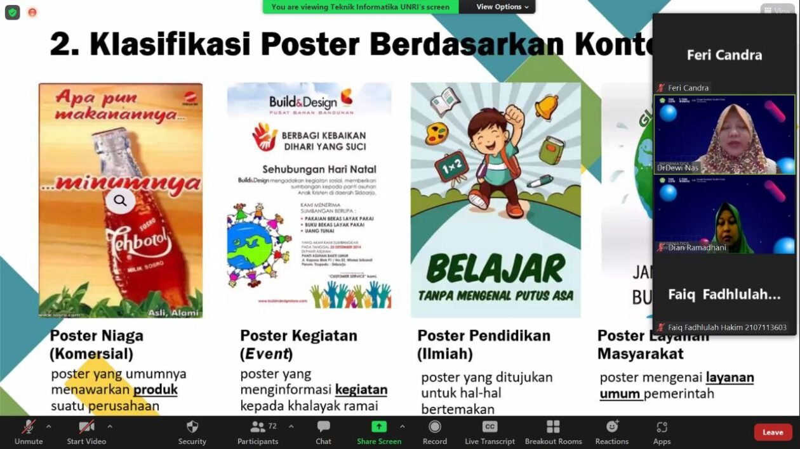

Program Studi Teknik Informatika Universitas Riau bekerjasama dengan GDSC-UR (Google Developer Student Clubs Universitas Riau) mengadakan webinar yang merupakan salah satu dari dua rangkaian kegiatan Informatic Poster Days 2022. Informatic Poster Days 2022 sendiri digelar dengan mengadakan webinar dan lomba poster.
Webinar yang diadakan secara virtual menggunakan Zoom Meeting pada tanggal 15 Juni 2022 ini membahas bagaimana membuat poster khusus nya poster riset/projek teknologi informasi. Kegiatan yang diikuti oleh Mahasiswa Program Studi Teknik Informatika S1 bertujuan sebagai sarana belajar bagi mahasiswa program studi teknik informatika dalam mendokumentasikan karya proyek teknologi informasi yang telah dibuat, khususnya pada mata kuliah berbasis project based dan kerja praktik/skripsi ke dalam sebuah poster sehingga mempermudah penyampaian informasi kepada publik, dengan harapan meningkatkan literasi dan inspirasi bagi mahasiswa lainnya.
Kegiatan dalam webinar ini meliputi sharing materi yang dibawakan langsung oleh narasumber mengenai bagaimana pembuatan poster yang baik dan benar, review beberapa poster karya mahasiswa, lalu dilanjutkan dengan diskusi dan tanya jawab.
Dr. Dewi Nasien, S.T.,M.Sc. sebagai Narasumber Webinar menjelaskan poster saat ini terdiri dari berbagai jenis seperti poster komersial, poster event, poster ilmiah dan poster layanan masyarakat. Poster ilmiah seperti skripsi umumnya memiliki beberapa sub bagian seperti bagian judul, nama peneliti, latar belakang penelitian, tujuan dan luaran penelitian, metode penelitian, hasil penelitian, kesimpulan dan referensi (tambahan), tim peneliti dan logo instansi, foto pendukung penelitian, dan bagian bawah (kontak, alamat email, telp, medsos) yang ditempatkan dalam tata layout, warna, typografi dan unity sedemikian rupa sehingga tujuan pembuatan poster itu sendiri yaitu mengkomunikasikan hasil penelitian secara visual kepada sekelompok individu melalui penyampaian yang ringkas atau padat, singkat, jelas, menarik dan mudah dibaca dapat tercapai.
Webinar ini dipandu oleh MC Yulmaisi Dwi Asmarita dan moderator oleh Dian Ramadhani, S.T.,M.T. mendapat sambutan yang cukup antusias dari Mahasiswa khususnya yang akan mengikuti lomba poster pada rangkaian Informatic Poster Days 2022.